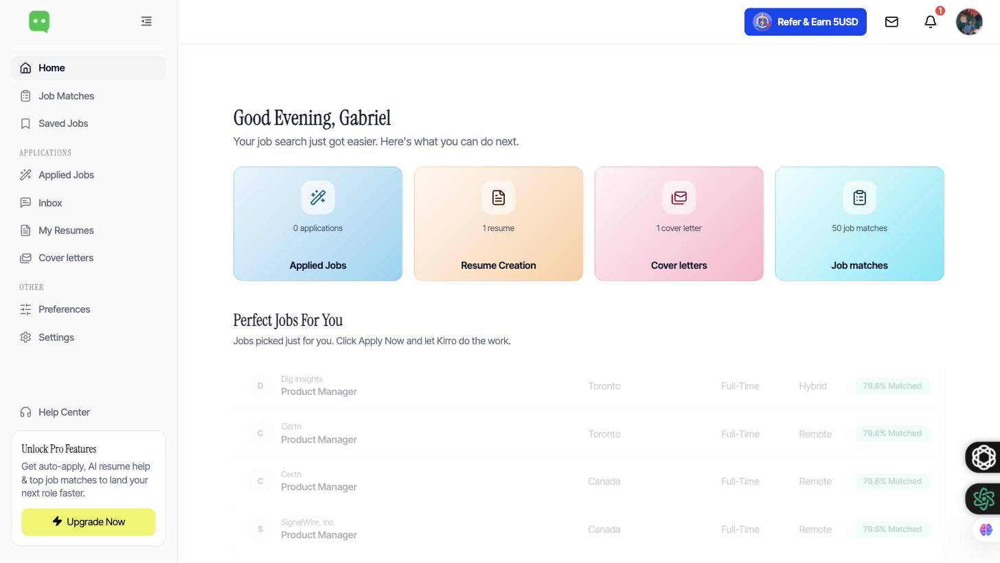
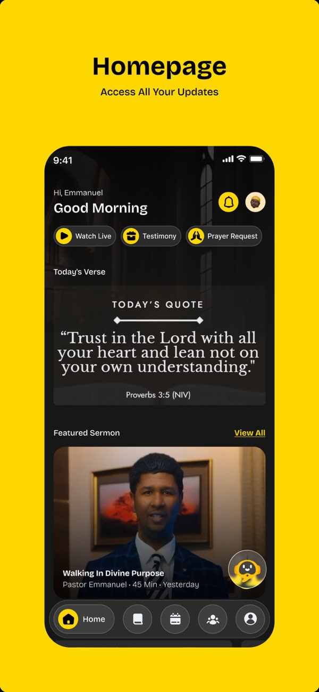
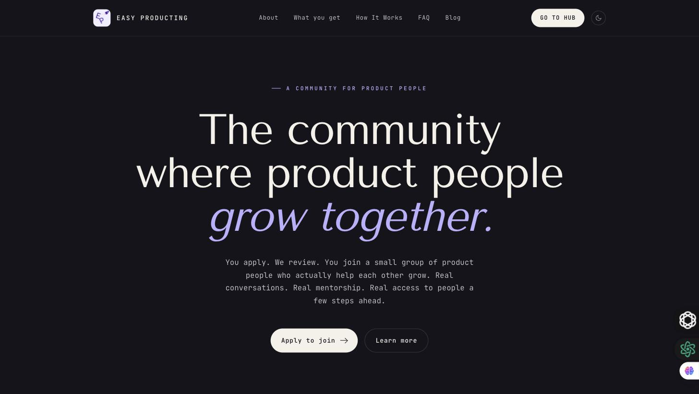
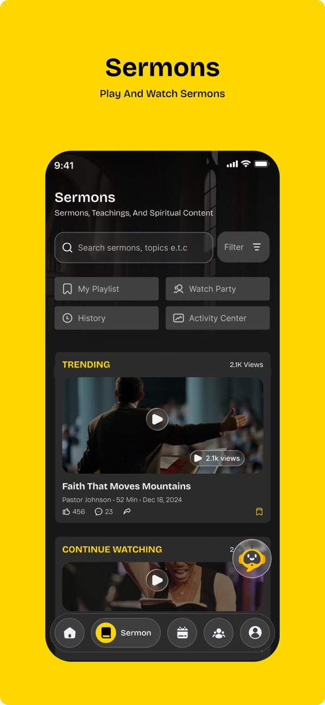

Product work I've shipped, plus a voluntary growth role. Browse the gallery, or read the full story behind each one — the problems, the roadmap phases, and the real numbers.
Wandr — AI travel decision engine · Founder

Kirro — AI-powered job search · Product Manager

Ambassadors Word — Church community app · Product Manager (Contract)

Easy Producting — Community for product people · Growth Manager (Voluntary)
A church community app for sermons, events, donations and pastoral care.
The home screen — daily verse, featured sermon, and one-tap access to Watch Live, Testimony and Prayer Request.
Co-led end-to-end development of the app as contract Product Manager — authentication, events, donations and AI-assisted support — authoring the PRDs and user flows that cut engineering handoff ambiguity, and sequencing the launch backlog against a fixed contract timeline so core flows shipped on schedule.
Donations, events, Bible devotionals, testimonies and sermons — the foundation of the app.
Building a community layer so members connect with each other, not just with content.
An AI chatbot for everyday spiritual questions — anything serious hands off to a real pastor.

The sermons library — search, trending talks and continue watching, with "Chat with Pastey" one tap away.
Easy Producting is a community where product people grow together — a small, application-only group built on real conversations, real mentorship, and access to people a few steps ahead.
As voluntary Growth Manager, I work alongside the founder and a small volunteer team on the parts of the funnel that get people in the door and keep them there: Awareness & Acquisition (visuals, messaging, sign-off on ads and organic outreach), Activation (turning a signup into someone who actually logs in and uses the platform), and Engagement (keeping active members active). I do it because I'd rather help build the kind of community I wish I'd had earlier in my own product career.